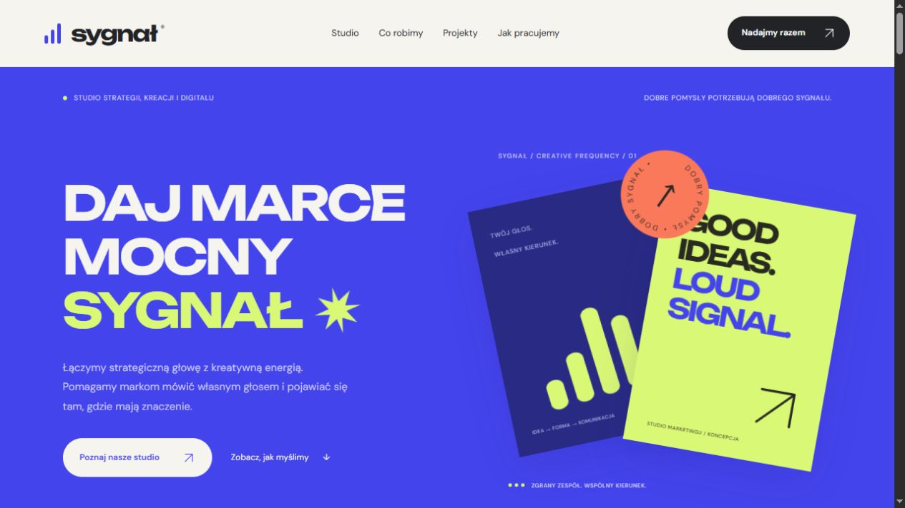
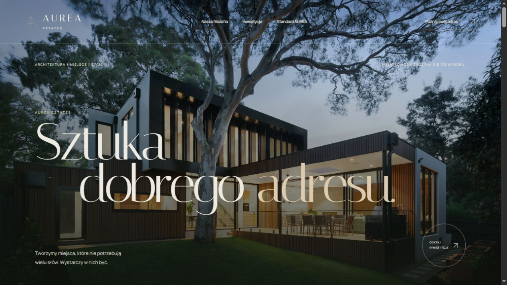
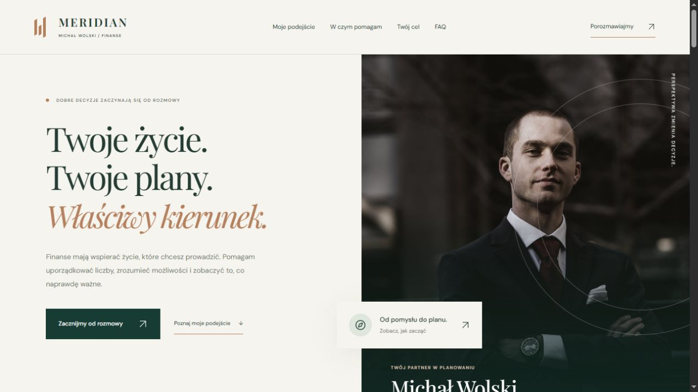
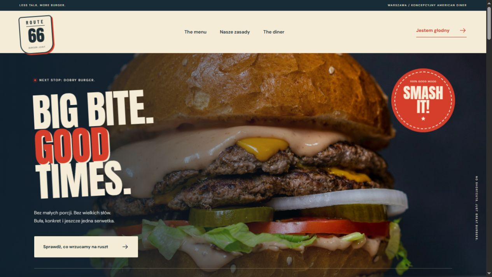
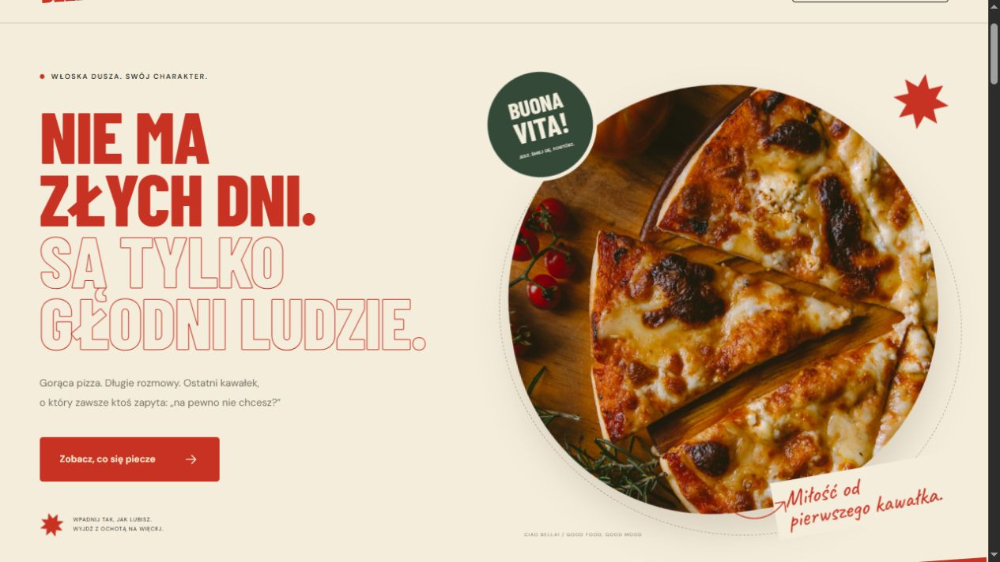
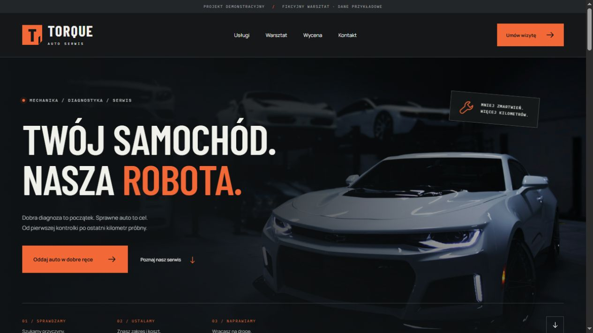

10 / MarketingOtwórz projekt

SYGNAŁAgencja marketingowa
Kreatywne studio w kobalcie i limonce. Autorskie kompozycje, opisy kompetencji i koncepcje kampanii pokazujące osobowość marki.
Otwórz stronę SYGNAŁ w nowej karcieZobacz, jak łączę wygląd, treść i funkcje w strony dopasowane do różnych branż.
Branże łączą się jako „lub”. Wyszukiwanie, funkcje i styl zawężają wynik razem.

Kreatywne studio w kobalcie i limonce. Autorskie kompozycje, opisy kompetencji i koncepcje kampanii pokazujące osobowość marki.
Otwórz stronę SYGNAŁ w nowej karcie
Luksusowa oprawa architektury, duże fotografie i dopracowana typografia. Inwestycje z filtrami, galeriami oraz animowanym ekranem ładowania.
Otwórz stronę AUREA ESTATES w nowej karcie
Elegancka prezentacja doradcy i sposobu współpracy. Kalkulator celu oszczędnościowego, rozwijane opisy usług i jasna droga do kontaktu.
Otwórz stronę MERIDIAN w nowej karcie
Amerykański klimat, mocna typografia i menu podzielone na kategorie. Wyrazisty design, który oddaje charakter burgerowni.
Otwórz stronę ROUTE 66 w nowej karcie
Ciepła oprawa, włoski temperament i wyrazista prezentacja pizzerii. Menu, historia miejsca i kontakt w jednym spójnym rytmie.
Otwórz stronę CIAO BELLA! w nowej karcie
Portfolio w formie wizualnego magazynu. Asymetryczne kadry, autorska typografia i przestrzeń dla zdjęć.
Otwórz stronę KLISZA w nowej karcie
Industrialny charakter, animowany żuraw i konkretna oferta. Strona pokazuje budowę od planu po efekt.
Otwórz stronę MONOLIT w nowej karcie
Spokojny, profesjonalny wizerunek kancelarii. Czytelny zakres pomocy i komunikacja skupiona na człowieku.
Otwórz stronę Adam Rudzki w nowej karcie
Lekka, świeża strona salonu. Duże zdjęcia, lookbook i przemyślany sposób prezentacji usług.
Otwórz stronę FORMA w nowej karcie
Mocna typografia, ciemna oprawa i oferta, która prowadzi prosto do zgłoszenia serwisowego.
Otwórz stronę TORQUE w nowej karcieNie ma projektu pasującego do tych kryteriów.
Spróbuj innej frazy albo pokaż wszystkie realizacje.
Autorskie projekty koncepcyjne prezentujące możliwości projektowe. Kliknij podgląd, aby zobaczyć działającą stronę.